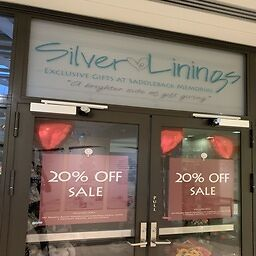
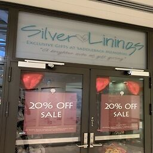
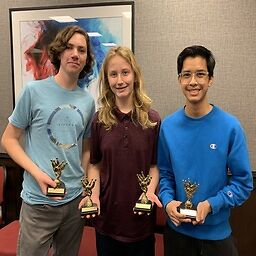
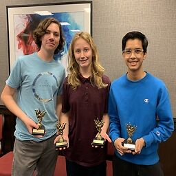
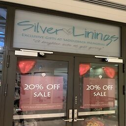
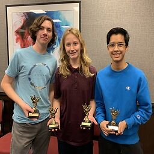

Gabe Dela Cruz
Gift Shop Volunteer at Saddleback Memorial Hospital
August 2021 - May 2023
For nearly two years within the span of my Junior and Senior years of High School, I was a volunteer working at Saddleback Memorial Hospital's gift shop. In the gift shop, I mainly worked as a cashier but also was of assistance to customers who inquired about the products that the store offered. The products included: clothes, books, cards, toys, candy, flowers, and jewelry. My shifts were every Friday from 4 PM - 7PM and I made sure to always be punctual and arrive on time, driving there straight after the school day had ended to never be late once. In addition to working on Fridays, I also trained new volunteers on separate days as I became more experienced throughout the years. That experience that I gained while working was essential for making me a more well-rounded person and comfortable in better communicating with others, especially with strangers. Many types of people entered through the doors and my job in assisting and answering their questions gave me the confidence in necessity to best help and communicate with them to provide the best store experience possible. Furthermore, my communication skills were also enhanced by working with three separate co-workers throughout my time in Saddleback as we had to communicate well while on the job to ensure a productive workplace while also providing the best service possible to customers. In my three separate teams of two, one would man the register and scan the items while the other would help answer questions and bag up the items, which created a good rhythm for great efficiency. These roles were not always set in stone as roles would often be switched or would overlap greatly to the point of organized chaos while still managing to get the job done time after time. As I exclusively worked the closing shift, in addition to performing the same tasks as the shifts before, closing the store was an utmost priority that had to be executed well in a three-step process. This included turning off the lights, closing the cash register by taking out all the money and coins to be put into a secured bag, and finally locking and closing the doors to hand off the keys to security. Overall, my time at Saddleback was one to remember as it taught me many things that can be applied to future jobs that concern customer service and especially hands-on teamwork. Though it was strictly a volunteer job that came with no pay or benefits, it taught me the value of work and the dedication of always doing your best to fulfill a sense of accomplishment and purpose for time spent.
Experience
Gift Shop Volunteer
• Cashier
• Gift Shop Volunteer Trainer
• Experience with POS Register
Youth Bowler in Team Bowling Tournament
• Winter 2019 Team Scratch Series Award Winner - 1322 Pins in 3 Games of Play
• Fall 2019 Team Scratch Game Award Winner - 488 Pins
• Finished 2nd in Winter 2022 Tournament
Education
UC Riverside
Portfolio
 

 


